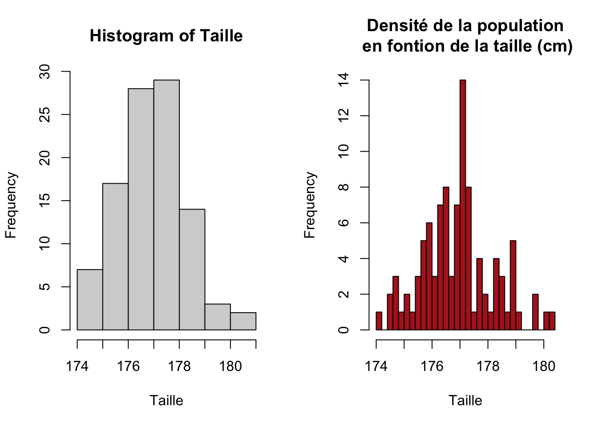
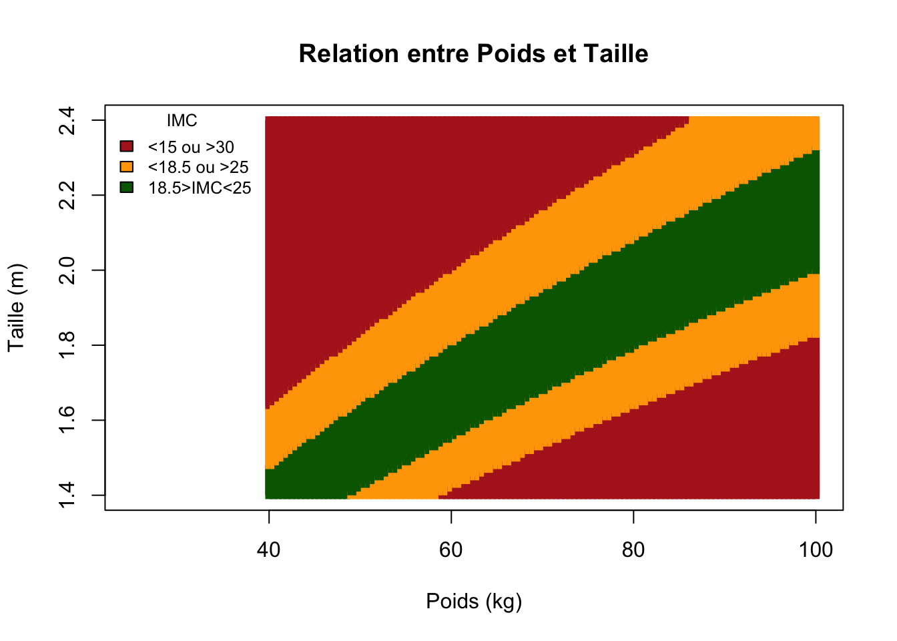

Chapter 1 Introduction au langage de programmation R
L’objectif de ce premier cours magistral est de reprendre les bases concernant R et d’être capable :
De comprendre comment se structure le langage de programmation
R.D’aller chercher les informations au sein des jeux de données.
De visualiser les informations des jeux de données.
Je vous joins ici une vidéo qui résume l’ensemble des fonctions nécessaires pour traiter des données écologiques/biologiques/environnementals. https://www.youtube.com/watch?v=dQe3Z7hRG1s
1.1 Rstudio et IDE.
Le langage de programmation R est un langage spécifique adapté aux statistiques/mathématiques permettant de faire des calculs et visualiser des résultats à travers une fenêtre graphique. C’est le langage préferentiel des biologistes/physiologistes et cliniciens que ce soit dans les secteurs privés (start up, biotech.) ou plublique (recherche, université, collectivité).
On peut l’utiliser sous 2 formes. La console R sans IDE (integrated development environment), qui ne comprend qu’une fenêtre (i.e. la console) où l’on peut écrire des lignes de commandes et une forme avec IDE. Nous travaillerons exclusivement avec la forme IDE. L’IDE le plus connue de R est RStudio et il comprend 4 fénêtres :
un script.
une fenêtre listant l’environnement (objet, matrice, fonction)
une fenêtre graphique/aide.
la console de commande.
Bien évidemment, vous pouvez modifier ces fenètres et leur agencement.
1.2 Les pré-requis
1.2.1 Les objects
Le second point clé dans la compréhension de R, ce sont les objets. La plus part des éléments de votre environnement seront des objets. Ils peuvent prendre la forme d’une suite de nombre, d’une phrase, d’une matrice, d’un tableau… Lorsque vous donnez délibérement une valeur, une forme à votre objet, il s’enregistre automatiquement dans votre environnement R, votre espace de travail actuel. Un objet possède une longueur et/ou une dimension particulière. De plus, on peut appliquer des opérations ou des fonctions à ces objets.
Un objet possède un type de donnée (data.frame, numeric, character, factor, matrix, function, …). Vous pouvez savoir de quel type il s’agit en utilisant la fonction class() ou mode().
Vous pourrez donc appliquer des opérations à des objets de type numeric. Il est important de voir ces suites de nombres comme des matrices numériques. Dans ce contexte, les opérations mathématiques que vous allez réaliser se feront pour chacunes des entités de la matrice.
\[ a = \left\{\begin{array}{lr} 1\\ 2\\ \dots\\ 10 \end{array}\right\} \] Premier exemple (on applique un carré à la première suite de nombre) :
## [1] 1 2 3 4 5 6 7 8 9 10## [1] 1 4 9 16 25 36 49 64 81 100Donc le carré est appliqué en ligne pour chacun des nombres.
Deuxième exemple (on additionne deux suites de nombre de longueur identique, ici la vecteur \(a\)) :
## [1] "Première suite de nombre ="## [1] 1 2 3 4 5 6 7 8 9 10## [1] "Addition de la suite avec elle même ="## [1] 2 4 6 8 10 12 14 16 18 20De même, le premier chiffre de chaque série est additioné avec le premier chiffre de la seconde série.
1.2.1.1 Les variables
En statistique, on distingue deux types de variables :
- Variables quantitatives : elles prennent des valeurs numériques et permettent de mesurer une quantité (ex. âge, taille, poids).
- Variables qualitatives : elles représentent des catégories ou des qualités et ne sont pas numériques (ex. sexe, couleur des yeux, type de régime).
Chaque variable qualitative peut prendre différentes modalités, c’est-à-dire les valeurs possibles qu’elle peut adopter. Par exemple, pour la variable Couleur des yeux, les modalités peuvent être bleu, vert, marron. La différence clé est donc que la variable définit la caractéristique étudiée, tandis que les modalités représentent ses différentes catégories possibles.
1.2.2 Les fonctions
Elles permettent de réaliser une action (généralement un calcul) lorsque l’on y fait appel. Le langage possède des fonctions natives, c’est-à-dire des actions/calculs qui sont déjà créer et implémenter dans R.
Pour faire appel à des fonctions, il faut écrire le nom de la fonction dans la console et définir les arguments de la fonction entre des parenthèses. Les arguments sont à définir par l’utilisateur (vous) et devront être séparés par des virgule.
Prenons l’exemple de la fonction rnorm(n, mean, sd). Cette fonction permet de réaliser une simulation de n individus qui suivront une loi normale d’une moyenne (mean) et d’un écrat-type (sd) que vous devez définir. Ici je représente, graphiquement, la distribution normale de la taille (en cm) de 100 individus, ayant une moyenne de 177 cm et un écart type de 1,2.
Posez vous la question à chaque fois : Comment reconnaitre une fonction ? Combien d’arguments possède t’elle ? Quelle est son action ?
layout(matrix(c(1,2), nrow=1))
Taille <- rnorm(100, mean = 177, sd = 1.2)
hist(Taille)
hist(Taille, col="firebrick", breaks=40, main="Densité de la population\n en fontion de la taille (cm)")
Dans R vous avez la possibilité de réaliser vos propres fonctions (description en fin de cours et objectif du premier TP).
1.2.2.1 Les fonctions indispensables dans le data mining.
c(): concaténation de suite de chiffres/characters/factors.object[ , ]: permet de sélectionner une (ou plusieurs) ligne(s) et une (ou plusieurs) colonne(s) d’un objet qui peut être de classe data.frame, matrix ou tibble.which(): permet de rechercher les élements d’un vecteur qui valide une condition.grep(): similaire à which en moins restrictif. Cette fonction permet de chercher une chaîne de caractère qui se trouve dans un vecteur.
Exercices : Tester ces fonctions dans le prochain TP.
Ne pas hésiter à utiliser la fonction help(), pour avoir accès aux arguments des fonctions que vous souhaitez utiliser.
1.2.2.2 Data mining sur les objets de classes numériques
Les objets, que nous avons créé jusqu’à présent, sont des suites de chiffres et chaque chiffre a une position précise dans la suite. Il nous est alors possible de rechercher un nombre spécifique en fonction de sa position dans la suite.
Ici je créé une suite allant de 0.8 à 9.8.
Pourquoi la suite ne va pas jusqu’à 10.5 ?
Créer une séquence de chiffre personalisée avec la fonction
seq().
## [1] 0.8 1.8 2.8 3.8 4.8 5.8 6.8 7.8 8.8 9.8La ligne de code ci-contre montre comment accéder au 5ème chiffre dans la suite.
## [1] 4.8Nous pouvons aussi chercher les chiffres avec des conditions spécifiques. Ici, je vais aller chercher les chiffres de la suite compris entre 1 et 5.
## [1] 2 3 4 5Par ailleurs, il est possible dans R de créer des tableaux (matrices) et de travailler sur ces mêmes tableaux (comme dans Excel). Dans cet exemple, nous considérerons une matrice (tableau) de 3 lignes et 4 colonnes.
\[ X_{i,j} = \left\{\begin{array}{lr} 1, 2,5, 7\\ 2, 2 , 4, 9\\ 3, 5, 7, 10 \end{array}\right\} \]
Pour créer ce tableau, nous utiliserons la function matrix(), qui possède 4 arguments. Nous appelons ce tableau \(mat\), qui est un objet.
Le premier argument correspond aux chiffres qui seront implémentés dans le tableau.
Le second argument correspond au nombre de lignes.
Le troisième argument correspond au nombre de colonnes.
Enfin, le 4ème argument correspond à la manière d’implémenter les chiffres, ici nous spécifions que les chiffres seront implémentés par ligne.
mat <- matrix(c(1, 2, 5, 7, 2, 2 , 4, 9, 3, 5, 7, 10), nrow = 3, ncol=4, byrow=T)
colnames(mat) = c("anglais", "français", "espagnol", "latin")
rownames(mat) = c("eleve 1", 'eleve 2', "eleve 3")
print(mat)## anglais français espagnol latin
## eleve 1 1 2 5 7
## eleve 2 2 2 4 9
## eleve 3 3 5 7 10On peut utiliser la fonction dim() pour accéder aux dimensions du tableau.
## [1] 3 4Le premier chiffre nous informe du nombre de lignes et le second du nombre de colonnes.
mat est donc un objet correspondant aux notes de 3 étudiants en fonction des disciplines. On peut aller chercher des lignes/colonnes qui nous interessent en utilisant les fonctions indispensables de data mining, introduites précédemment.
## [1] 1grep("ais",colnames(mat)) ## On souhaite avoir l'ensemble des colonnes qui contiennent le mot "ais".## [1] 1 2On peut très bien aller chercher l’information de manière manuelle, en sélectionnant les lignes ou colonnes sur lesquelles on souhaite travailler.
Il est possible de réaliser des opérations sur les matrices et de les combiner.
## anglais français
## eleve 1 1 2
## eleve 2 2 2mat[which(rownames(mat)=="eleve 1"|rownames(mat)=="eleve 2") ,
grep("ais",colnames(mat))] ## Sélection avancée## anglais français
## eleve 1 1 2
## eleve 2 2 21.2.3 Les data-frames
Dans notre cours nous utiliserons un type particulier de tableau, le data.frame, qui est proche des tableaux de classe matrice. Ils permettent de gérer les données de manière plus facile et rapide. On peut facilement transformer la matrice que nous avons créer en objet de type data.frame grâce à la fonction as.data.frame(). Je vous présenterai 2 avantages à travailler sur data.frames plutôt que sur des objets de classe matrix.
df <- as.data.frame(mat) # Première étape : transformer l'objet matrix en objet data.frame
class(df) # Vérifier la classe de l'objet.## [1] "data.frame"## [1] 7 9 101.3 Les boucles
L’intérêt de R est de pouvoir réaliser des boucles, c’est-à-dire des itérations pour réaliser des calculs sur des tableaux de données importants. L’exemple le plus simple est de réaliser la moyenne des éleves à partir d’une boucle.
Une boucle se réalise avec la fonction for() ou while(). La différence entre ces deux fonctions réside dans leur nature d’arrêt.
Pour la fonction for(), nous allons assigner un objet, une séquence (numérique ou de character) à une lettre, et pour chaque élément de la liste/objet/séquence nous réaliserons l’action ou les actions qui seront inclus dans la boucle.
Pour la fonction while(), l’argument sera une condition. Tant que cette condition ne sera pas remplie alors la boucle continuera son action.
Pour l’exemple suivant, \(i\) prendra ne nom de chacun des élèves. l’itération n°1 consistera à créer la phrase suivante : “L’élève 1 possède une moyenne de …”. Ici mean(as.numeric(df[which(rownames(df)==i),]))) permet de calculer la moyenne de la ligne où la condition suivante which(rownames(df)==i) est respectée. Littérallement, cette condition signifie que nous recherchons le numéro de la ligne de \(i\) (ici \(i\) correspond à “eleve 1” lors de la première itération, puis “eleve 2” dans la seconde itération).
Cette ligne de code nous permet donc de calculer l’ensemble des moyennes des élèves.
for(i in rownames(df)){
print(paste(i,"possède une moyenne de", mean(as.numeric(df[which(rownames(df)==i),]))))
}## [1] "eleve 1 possède une moyenne de 3.6"
## [1] "eleve 2 possède une moyenne de 5"
## [1] "eleve 3 possède une moyenne de 5.4"Vous allez pouvoir utiliser la fonction apply ou rowMeans pour avoir les mêmes résultats.
1.3.0.1 Exercices
Créer une matrice de 200 lignes et 10 colonnes. Simuler les données (200x10 = 2000 données) qui suivront une loi normale de moyenne 3 et d’écart type 1.
Ajouter une colonne à ce tableau (200 observations d’une variable), la nouvelle variable suivra une loi normale de moyenne 2 et d’écart type 2.
Calculer la moyenne en colonne (par variable) puis la moyenne en ligne (par individu/observation) en utilisant la fonction
rowMeans()puis en utilisant la fonctionapply().
1.4 Les fonctions (version intermédiaire)
Ce chapitre ne sera sans doute pas vu en cours mais vous êtes libres de le lire pour vos propres connaissances personnelles. Il pourra être approfondi lors du TP n°1.
L’objectif de cette partie est de créer ses propres fonctions. Je vais vous l’expliquer en prenant un exemple assez simple puis travailler l’ensemble des notions du cours à partir de cette fonction.
La première étape est de créer une fonction avec les différents arguments séparés par des virgules. Dans cet exemple, nous avons créé une fonction qui permet de calculer l’Indice de Masse Corporelle à partir de 2 arguments (la taille en mètre et le poids en kg).
Dans la seconde partie, nous créons une boucle pour calculer un ensemble d’IMC possible soit
Ta = P = BMI = NULL
for(kg in seq(40,100, by=0.5)){
for(metres in seq(1.40,2.40, by=0.01)){
P <- c(P, kg)
Ta <- c(Ta, metres)
BMI <- c(BMI , calcul_IMC(kg, metres))
}
}
df <- data.frame(P, Ta, BMI)
coupes <- cut(df$BMI, c(5, 15, 18.5, 25, 30, 55))
colors = as.character(factor(coupes,c(levels(coupes)), c("firebrick", "orange", "darkgreen", "orange", "firebrick") ))
plot(df[,1:2],col=t(colors), pch=15, cex=0.8, xlab= "Poids (kg)", ylab="Taille (m)",
main="Relation entre Poids et Taille", xlim=c(25, 100))
legend('topleft', legend =c('<15 ou >30','<18.5 ou >25','18.5>IMC<25'),
fill=c("firebrick", "orange", "darkgreen"),title = "IMC",cex=0.8, bty='n')